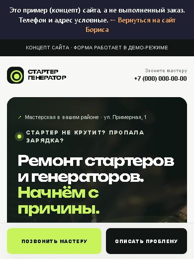

Сайт открывается дольше 5 секунд
Человек нажал «Сайт» в карточке на Картах и ждёт. Если ждать долго, он может уйти к соседям.
Сайт есть — бесплатно разберу за день и назову цену исправления. Сайта нет — сделаю новый.
Работаю удалённо по всей России. В Петербурге и области могу встретиться лично.
Салоны, стоматологии, детские центры, глэмпинги, автосервисы. Вот что получилось.
Человек нажал «Сайт» в карточке на Картах и ждёт. Если ждать долго, он может уйти к соседям.
Акция, cookie или чат закрывают первый экран — гость сначала видит не вас, а крестик.
Нет онлайн-записи, кнопки WhatsApp, цен. Вечером человек может записаться туда, где можно сразу.
Мало фото, нет цен, отзывы без ответа. Человеку сложнее выбрать вас среди компаний рядом.
Называю сумму после разбора или обсуждения задачи. Цена фиксируется для согласованного списка работ и не меняется по ходу.
Список работ, цену и дату сдачи согласуем до начала. «От 20 000 ₽» — это не любой объём: что входит, видно в согласованном списке. Новые пожелания оцениваю отдельно и делаю только после вашего согласия. Срок идёт после получения материалов, доступов и предоплаты. Домен, хостинг и платные сервисы оплачиваются отдельно.
Для Карт указано время подготовки и отправки изменений. Срок проверки и публикации зависит от Яндекса и 2ГИС. Сложные интеграции оцениваются отдельно.
Один сайт и карточки одной компании по одному адресу. До 3 небольших обновлений текста, фото или цен, ответы на отзывы — до 10, отчёт раз в месяц.
Одно обновление — правка одного существующего блока сайта или раздела карточки. Новые страницы и функции оцениваются отдельно. Продление по желанию, без обязательной подписки.
Вы присылаете ссылку на сайт или карточку. За один рабочий день после подтверждения заявки получите разбор: что мешает записи и сколько стоит исправить.
Показываю только реальные работы. Названия клиентов указываю с их согласия.
Действующий сайт на WordPress, больше 600 страниц. За первый день работ:
Название не указываю без согласия клиента.
Составляет смету и сохраняет её в PDF. Работает без интернета, без рекламы и регистрации.
Одностраничный сайт: услуги и цены, адрес и карта, кнопки звонка и мессенджеров, удобно с телефона. Показывает, каким может быть новый сайт для небольшого сервиса.

Это пример (концепт), а не выполненный заказ. Телефон и адрес в нём условные.
Калькулятор стоимости на сайт, приложение для смет, записи или учёта, небольшая программа под вашу задачу. Опишите, что нужно, — оценю срок и цену бесплатно.
Клиент сам выбирает параметры и сразу видит примерную цену — и оставляет заявку.
Приложение для телефона: смета за пару минут и готовый PDF для клиента.
Простой учёт заказов, записей или выездов — вместо тетради и разрозненных таблиц.
Расскажите, что хотите упростить или автоматизировать. Срок и цену назову до начала работ.
Присылаете ссылку. Подтверждаю заявку — за один рабочий день готовлю страницу со скриншотами.
Договариваемся о списке работ и сумме. За этот список сумма не растёт.
Остаток платите, когда увидели результат своими глазами.
Домен, доступы, система записи и бронирования — ваши.

Помогаю местному бизнесу получать больше клиентов из интернета: делаю новые сайты, исправляю старые, оформляю карточки на Яндекс Картах. Делаю и простые приложения — например, «Смета за минуту» в RuStore.
Подход простой: смотрю на ваш сайт так, как его видит клиент с телефона, нахожу, где он спотыкается, и исправляю именно это. Работаю удалённо с любым городом, а в Петербурге и области могу приехать и показать всё на месте.
Да. Пришлите ссылку на сайт или карточку. После подтверждения заявки подготовлю разбор за один рабочий день. Он ни к чему не обязывает — можете исправить всё сами или с другим подрядчиком.
Пришлите ссылку и название платформы. Сначала проверю возможности и ограничения, затем согласуем работу и доступы.
Да. Одностраничный сайт для одного бизнеса — от 30 000 ₽: услуги, цены, запись или бронирование, кнопки мессенджеров, удобно с телефона. Если нужно больше страниц, оценю отдельно до начала работ.
Да, простые: калькуляторы, сметы, приложения для записи или учёта. Опишите задачу — оценю срок и цену бесплатно. Сложные системы с нуля не беру, чтобы не обещать лишнего.
Честно — заявки не может гарантировать никто. Я отвечаю за согласованный список работ и сроки. Если подключена аналитика, вместе посмотрим, как изменились действия посетителей.
Перед изменениями сохраняю копию. Правки показываю до публикации.
50% перед началом, 50% после результата.
Сайт есть — за один рабочий день покажу, что мешает записи, и назову цену исправления. Нужен новый сайт или приложение — обсудим, и назову цену до начала работ.